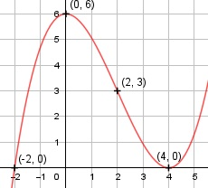

Aufgabe 23 3 9 f(x) = ----x3 - ---x2 + 6 16 8 9 9 9 9 f'(x) = ----x2 - ---x, f''(x) = ---x - ---, 16 4 8 4 9 f'''(x) = --- 8 Definitionsbereich: -∞ < x < ∞ Wertebereich: -∞ < f(x) < ∞ Asymptoten: - Symmetrie: - Nullstellen: Durch Probieren gefunden x = -2 Hornerschema: 0,1875 - 1,125 0 6 x1 = -2 - 0,375 3 -6 --------------------------------- 0,1875 - 1,5 3 0 Polynomdivision: 0,1875x3-1,125x2+6 : (x+2) = 0,1875x2- 1,5x + 3 -(0,1875x3+0,375x2) ------------------ -1,5x2 + 6 -(-1,5x2 - 3x) ---------------- 3x + 6 -(3x + 6) ---------- 0 0,1875x2 - 1,5x + 3 = 0 |:0,1875 x2 - 8x + 16 = 0 p, q - Formel: p = -8, q = 16 x2,3 = x2,3 = 4 ± x2,3 = 4 ± x2,3 = 4 (Berührpunkt, Extrempunkt) N1(-2|0), N2,3(4|0) Schnittpunkt mit der y-Achse: 3 9 f(0) = ---- * 03 - --- * 02 + 6 = 6 16 8 Sy(0|6) Extrempunkte: 0,5625x2 - 2,25x = 0 0,5625x * (x - 4) 0,5625x = 0 |:0,5625 x1 = 0, f(0) = 6 x - 4 = 0 |+4 x2 = 4, f(4) = 0 x2 = 4 f''(0) = 1,125 * 0 - 2,25 = - 2,25 < 0 --> Hochpunkt (0|6) f''(4) = 1,125 * 4 - 2,25 = 2,25 > 0 --> Tiefpunkt (4|0) Wendepunkte: 1,125x - 2,25 = 0|+2,25 1,125x = 2,25 | :1,125 3 9 x = 2, f(2) = ---- * 23 - --- * 22 + 6 = 3, 16 8 f'''(2) ≠ 0 --> Wendepunkt (2|3) Graph:
